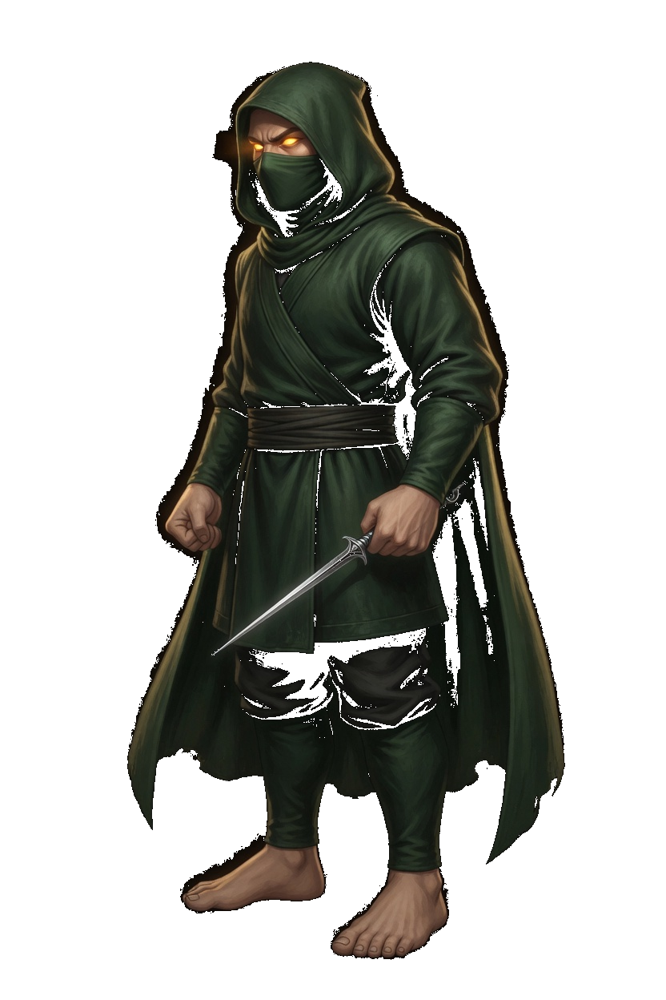
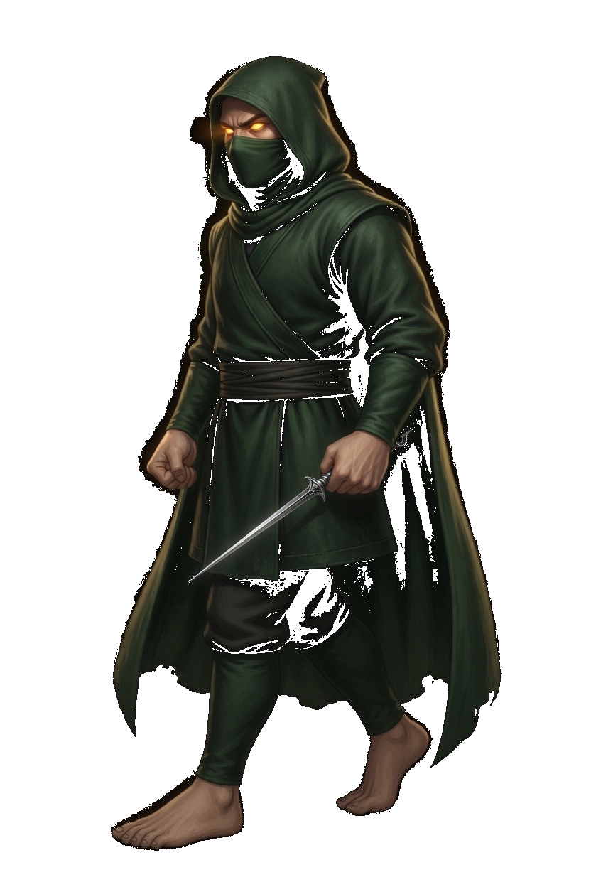
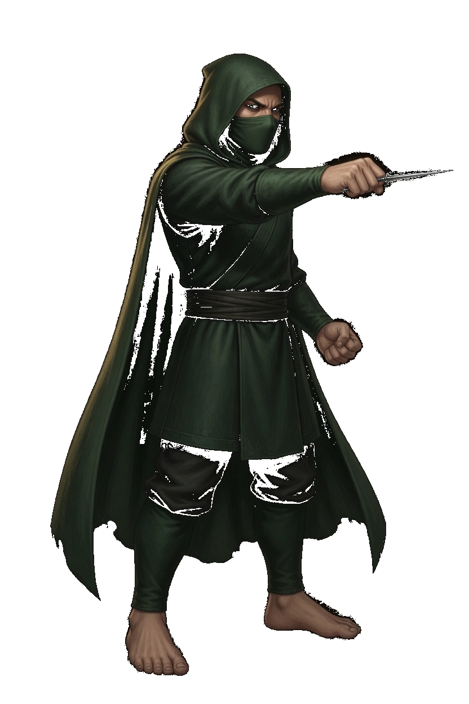
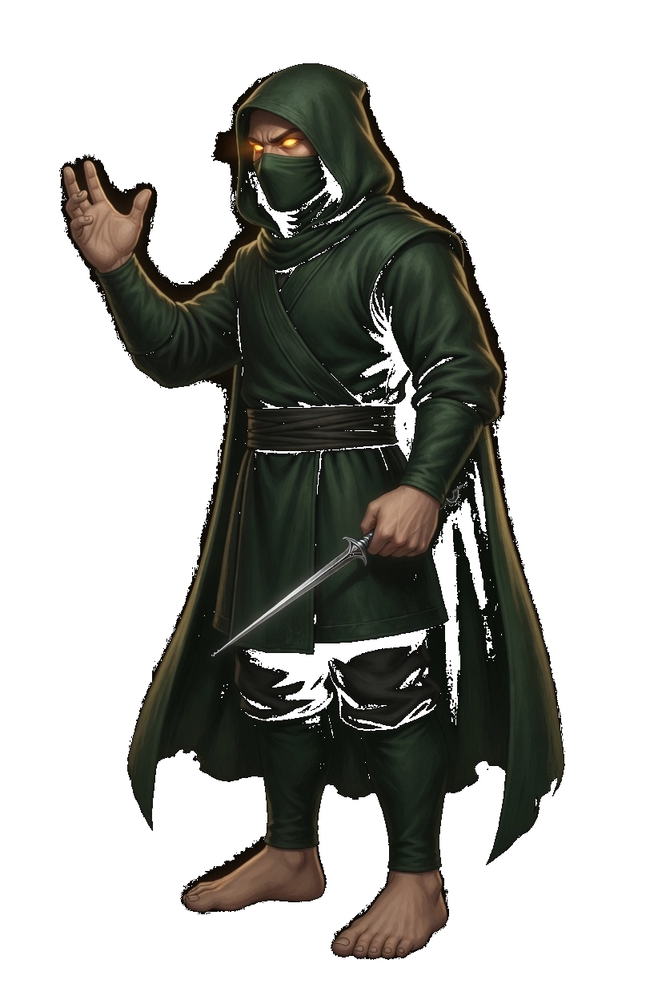
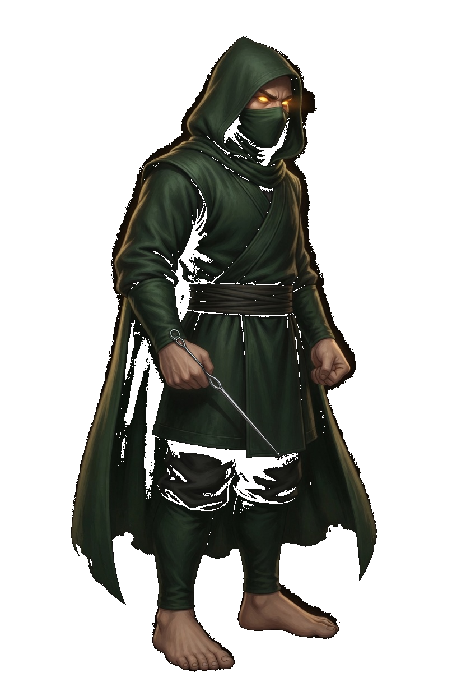
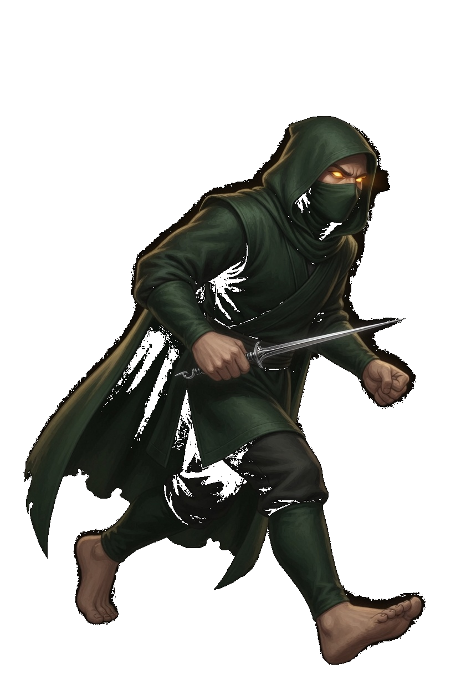
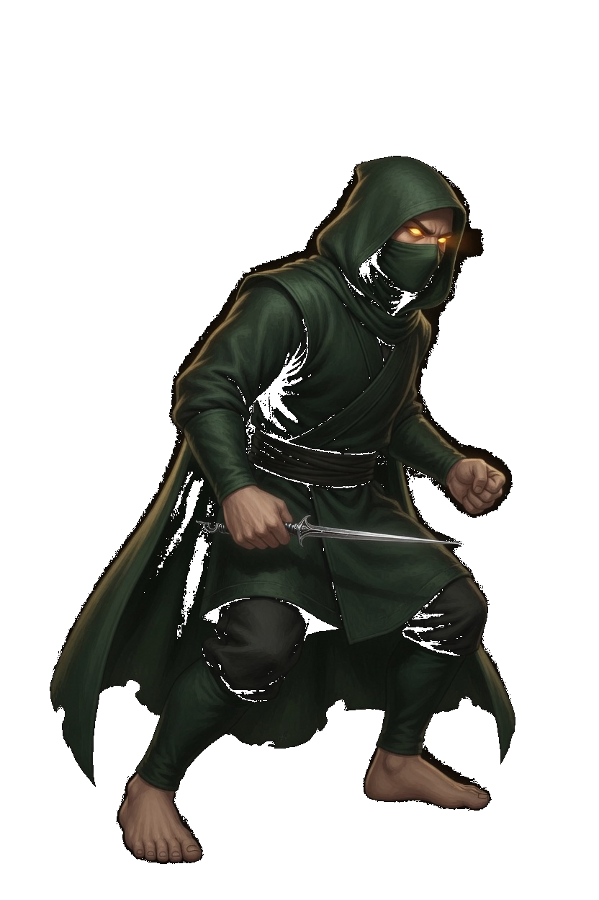
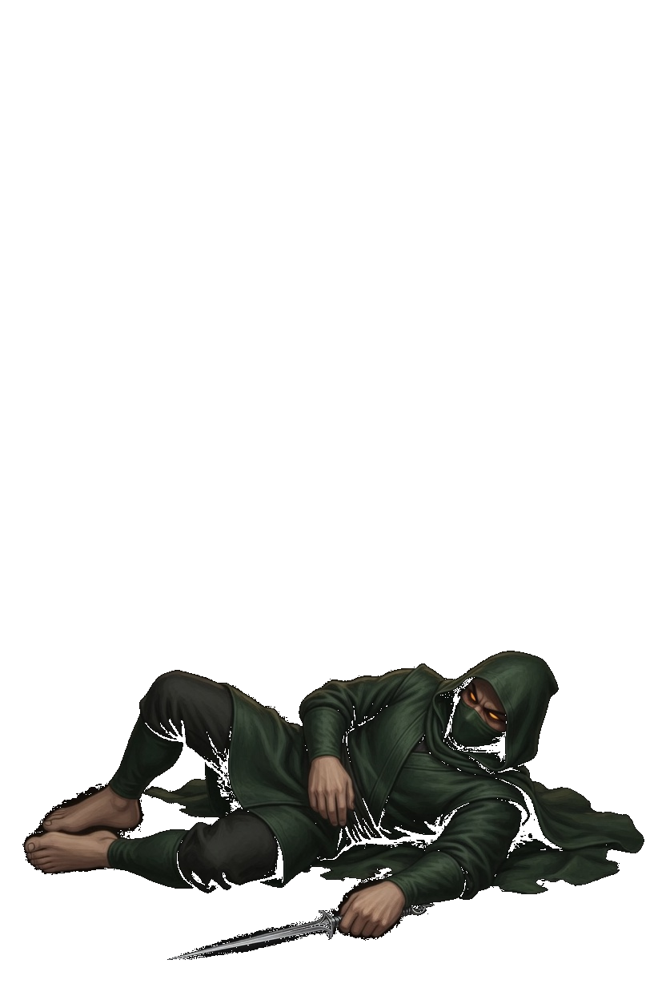
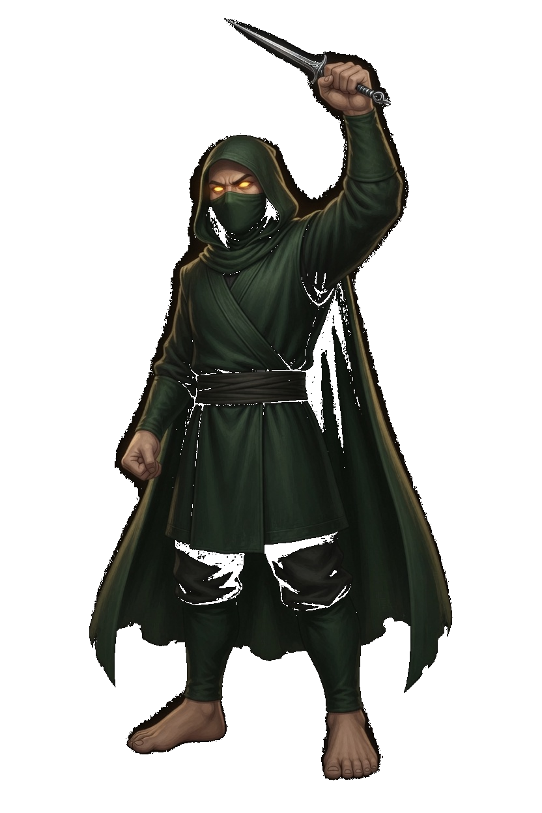

Srath · Shadow Needle
This card is the only pose list. A later frame has to match one of these keys. Native facing is right. The whole sprite flips. Deep green hood, cloth mask, amber eyes, one silver needle, bare feet. Srath is a gun, so the corner step is Slip. Her own move named Dash is the swift lean, not that step.
| Book | Value |
|---|---|
| Basic | Needle · leaves the hand · range 7.6 |
| Body | 550 health · 29 damage · 0.90 attacks/s · speed 4.2 · armor 2 · range 7.6 · mana 80 · regen 7 |
| Crit / cooldown | 0.20 crit · 0.82 cooldown scale |
| Cards | Veil Step · Tithe Sense · Echo Round |
| Moves | Doublespeak · Needle Rain · Dash |
| Stride | Slip · she is a gun · 30s · cost 8 |
What stays off the body
- Needle is one silver shot. It leaves the extended hand. It is not painted as extra metal on the cloak.
- Needle Rain is the spread. The body only lifts the open hand. The needles are not on this sprite.
- Doublespeak is the veil. The hood stays on, the mask stays on, and the amber eyes stay. The veil is the ring, not a glow painted onto the body.
- Dash is the named swift lean. Slip is the corner step. They are different keys.
Keys

Rest. Hood up, mask on, needle low in one hand, the other fist closed, both feet planted. This frame opens Needle, Doublespeak, and Needle Rain.

One stride. The right foot leads and the back foot reaches. The needle stays in the hand. The fight clip is idle, then this stride. An opposite contact is not on this card, so do not copy this stride and call it the other step.

The leading arm reaches and the needle points ahead, still in the hand. The other fist stays back. Frame 1 and frame 3 are idle.

The free hand is raised and open. The needle hand stays low. Frame 1 is idle. The spread is not on this sprite.

Hood dipped, mask and amber eyes still there, needle in the hand, both feet planted. Frame 1 is idle.

The named swift lean. The body tips forward and one foot reaches. Frame 2 is idle. This is not Slip.

The corner step. Low, needle forward, both feet down. Frame 2 is idle. There is no Close key.

Down in the lower part of the canvas, hood and mask still on, needle still in the hand. The clip holds this frame. The body is not scaled back up to standing height.

Needle raised, the other fist closed, both feet planted. This is not Dash and not Needle.